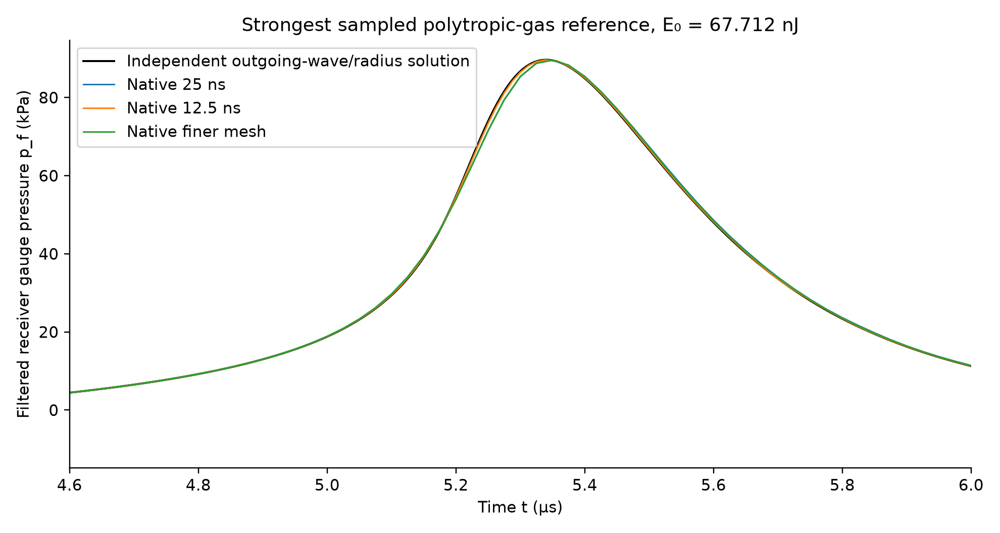

图与图例标注了本章源项／观测方程的全部变量。
A pressure maximum starts with an observable and an energy budget. The empty-cavity benchmark checks signs and inertia; its singular endpoint cannot define a attainable device maximum.
压力最大值必须从观测量与能量预算开始。空腔基准检验符号和惯性；其奇异终点不能定义器件可达到的最大值。
Multiply the radius equation by R²Ṙ and integrate from R=a, Ṙ=0. The first term and half the second term form the derivative of ½R³Ṙ². The native P0 speed check differs from this finite-radius prediction by 0.0263%.
将半径方程乘以 R²Ṙ，从 R=a、Ṙ=0 积分。第一项与第二项的一半组成 ½R³Ṙ² 的导数。原生 P0 速度检验与有限半径预测相差 0.0263%。
A finite gas inventory compresses and produces rebound. Constant κ=1.4 is a polytropic reference, not a measured hot-gas law. Bubble interior pressure, radial speed and liquid receiver pressure are different quantities.
有限气体存量在压缩中产生回弹。恒定 κ=1.4 是多方过程参考，并非测得的高温气体定律。泡内压力、径向速度和液体接收压力是不同物理量。
The water-domain normal points into the matching hole. The minus sign gives outward liquid flux during expansion. Source pressure work and wave flux cancel in the combined energy ledger. Moving cavity dynamics remain a nonlinear spherical source; the exterior wave is solved with tetrahedra in 3D.
水域法向指向匹配孔内部。负号使膨胀时液体通量向外。源压力功与波通量在总能量账中抵消。移动空腔以非线性球形源表示；外部波在三维四面体网格上求解。
In Model Wizard choose 3D, Coefficient Form PDE and Global Equations, then Time Dependent. The complete node recipe lists the scaled variable χ=φτ/a², matching-hole selections, receiver integration, radiation flux and the manual generalized-alpha steps. Rebuild the single-source component first.
在模型向导中选择三维、系数形式 PDE、全局方程，再选瞬态研究。完整节点说明列出缩放变量 χ=φτ/a²、匹配孔选择、接收积分、辐射通量与广义 α 手动步长。先重建单源组件。
Model A node recipe / 模型 A 节点说明 · Model A rebuild recipe / 模型 A 重建配置

Starting from a blank model, recover P0 at R/a=0.2, then build the gas/wave source with case 3. Explain why shrinking the empty-cavity stop radius changes the apparent peak, while refining a fixed pressure observer should converge. Reproduce the filtered pressure waveform and its energy residual.
从空白模型重现 R/a=0.2 的 P0，再建立第 3 情形的气体／波源。解释为何缩小空腔停止半径会改变表观峰值，而细化固定压力观测量应收敛。重现滤波压力波形与能量残差。
With Δp=100 kPa and ρ=1000 kg/m³, the inward speed at R/a=0.2 is −90.92 m/s. It increases without bound as R→0 only in that incompressible empty-cavity idealization. At f_c=1 MHz, τ_f=159.155 ns. The case-3 source has E₀=67.712 nJ, a=51.7448 μm, β=0.05; the refined native pressure is about 89.61 kPa, not the internal gas pressure near 9.55 MPa. Agreement applies to this source matching and observer.
Δp=100 kPa、ρ=1000 kg/m³ 时，R/a=0.2 的向内速度为 −90.92 m/s。R→0 时的无界增长仅属于该不可压空腔理想化。f_c=1 MHz 对应 τ_f=159.155 ns。第 3 情形 E₀=67.712 nJ、a=51.7448 μm、β=0.05；细化原生接收压力约 89.61 kPa，与接近 9.55 MPa 的泡内气压不同。此一致性仅适用于本源匹配与观测器。
Ask the agent about any unclear sign, equation, node or assumption. Reply with a brief synthesis or one rebuilt observable; do not copy the reference answer.
任何符号、方程、节点或假设不清楚时，请询问智能体。用简短综合或一个重建观测量作答，无须抄写参考答案。